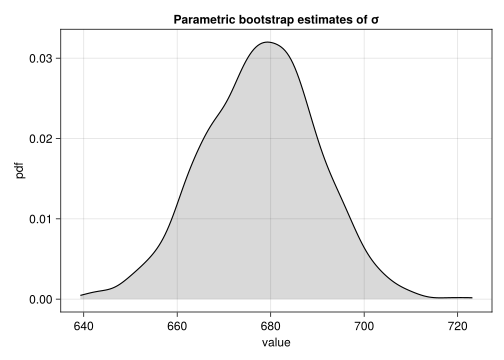
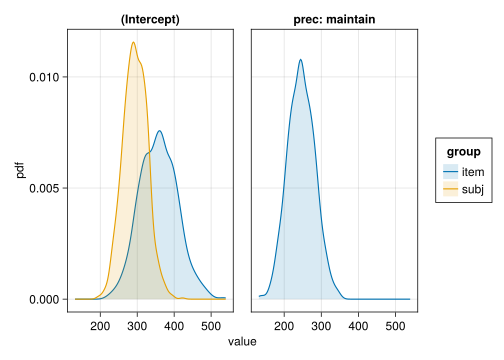
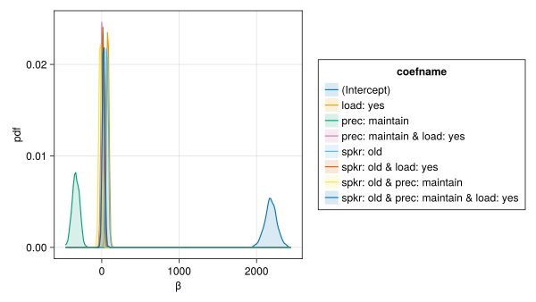
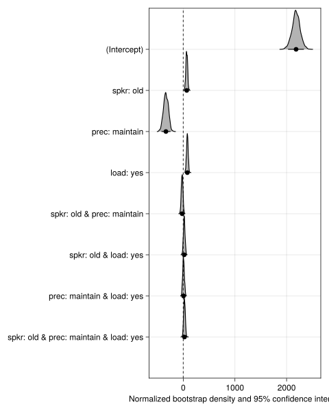
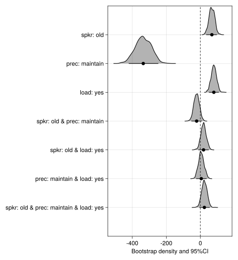
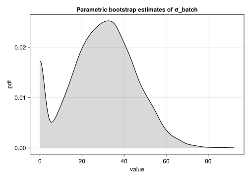
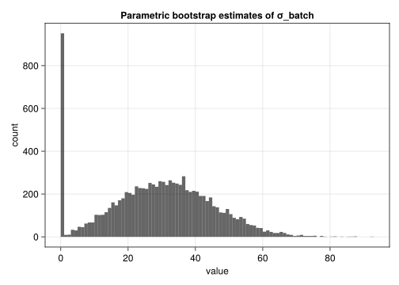
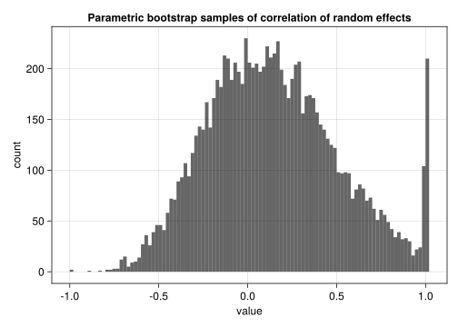

using AlgebraOfGraphics
using CairoMakie
using DataFrames
using MixedModels
using MixedModelsMakie
using ProgressMeter
using Random
using AlgebraOfGraphics: AlgebraOfGraphics as AoG
CairoMakie.activate!(; type="svg") # use SVG (other options include PNG)
ProgressMeter.ijulia_behavior(:clear);Parametric bootstrap for mixed-effects models
The speed of MixedModels.jl relative to its predecessors makes the parametric bootstrap much more computationally tractable. This is valuable because the parametric bootstrap can be used to produce more accurate confidence intervals than methods based on standard errors or profiling of the likelihood surface.
This page is adapted from the MixedModels.jl docs
The parametric bootstrap
Bootstrapping is a family of procedures for generating sample values of a statistic, allowing for visualization of the distribution of the statistic or for inference from this sample of values. Bootstrapping also belongs to a larger family of procedures called resampling, which are based on creating new samples of data from an existing one, then computing statistics on the new samples, in order to examine the distribution of the relevant statistics.
A parametric bootstrap is used with a parametric model, m, that has been fit to data. The procedure is to simulate n response vectors from m using the estimated parameter values and refit m to these responses in turn, accumulating the statistics of interest at each iteration.
The parameters of a LinearMixedModel object are the fixed-effects parameters, β, the standard deviation, σ, of the per-observation noise, and the covariance parameter, θ, that defines the variance-covariance matrices of the random effects. A technical description of the covariance parameter can be found in the MixedModels.jl docs. Lisa Schwetlick and Daniel Backhaus have provided a more beginner-friendly description of the covariance parameter in the documentation for MixedModelsSim.jl. For today’s purposes – looking at the uncertainty in the estimates from a fitted model – we can simply use values from the fitted model, but we will revisit the parametric bootstrap as a convenient way to simulate new data, potentially with different parameter values, for power analysis.
For example, a simple linear mixed-effects model for the Dyestuff data in the lme4 package for R is fit by
Note that the precise stream of random numbers generated for a given seed can change between Julia versions. For exact reproducibility, you either need to have the exact same Julia version or use the StableRNGs package.
A model of moderate complexity
The kb07 data (Kronmüller & Barr, 2007) are one of the datasets provided by the MixedModels package.
kb07 = MixedModels.dataset(:kb07)Arrow.Table with 1789 rows, 7 columns, and schema:
:subj String
:item String
:spkr String
:prec String
:load String
:rt_trunc Int16
:rt_raw Int16Convert the table to a DataFrame for summary.
kb07 = DataFrame(kb07)
describe(kb07)7 rows × 7 columns
| variable | mean | min | median | max | nmissing | eltype | |
|---|---|---|---|---|---|---|---|
| Symbol | Union… | Any | Union… | Any | Int64 | DataType | |
| 1 | subj | S030 | S103 | 0 | String | ||
| 2 | item | I01 | I32 | 0 | String | ||
| 3 | spkr | new | old | 0 | String | ||
| 4 | prec | break | maintain | 0 | String | ||
| 5 | load | no | yes | 0 | String | ||
| 6 | rt_trunc | 2182.2 | 579 | 1940.0 | 5171 | 0 | Int16 |
| 7 | rt_raw | 2226.24 | 579 | 1940.0 | 15923 | 0 | Int16 |
The experimental factors; spkr, prec, and load, are two-level factors.
contrasts = Dict(:spkr => EffectsCoding(),
:prec => EffectsCoding(),
:load => EffectsCoding(),
:subj => Grouping(),
:item => Grouping())Dict{Symbol, StatsModels.AbstractContrasts} with 5 entries:
:item => Grouping()
:spkr => EffectsCoding(nothing, nothing)
:load => EffectsCoding(nothing, nothing)
:prec => EffectsCoding(nothing, nothing)
:subj => Grouping()The EffectsCoding contrast is used with these to create a ± encoding. Furthermore, Grouping constrasts are assigned to the subj and item factors. This is not a contrast per-se but an indication that these factors will be used as grouping factors for random effects and, therefore, there is no need to create a contrast matrix. For large numbers of levels in a grouping factor, an attempt to create a contrast matrix may cause memory overflow.
It is not important in these cases but a good practice in any case.
We can look at an initial fit of moderate complexity:
form = @formula(rt_trunc ~ 1 + spkr * prec * load +
(1 + spkr + prec + load | subj) +
(1 + spkr + prec + load | item))
m0 = fit(MixedModel, form, kb07; contrasts)Minimizing 934 Time: 0:00:01 ( 1.43 ms/it)
objective: 28637.97101024215| Est. | SE | z | p | σ_subj | σ_item | |
|---|---|---|---|---|---|---|
| (Intercept) | 2181.6424 | 77.3512 | 28.20 | <1e-99 | 301.8676 | 362.4694 |
| spkr: old | 67.7496 | 17.9607 | 3.77 | 0.0002 | 33.0524 | 41.1185 |
| prec: maintain | -333.9200 | 47.1564 | -7.08 | <1e-11 | 58.8607 | 247.3292 |
| load: yes | 78.8007 | 19.7260 | 3.99 | <1e-04 | 66.9505 | 43.3885 |
| spkr: old & prec: maintain | -21.9960 | 15.8191 | -1.39 | 0.1644 | ||
| spkr: old & load: yes | 18.3832 | 15.8191 | 1.16 | 0.2452 | ||
| prec: maintain & load: yes | 4.5327 | 15.8191 | 0.29 | 0.7745 | ||
| spkr: old & prec: maintain & load: yes | 23.6377 | 15.8191 | 1.49 | 0.1351 | ||
| Residual | 669.0516 |
The default display in Quarto uses the pretty MIME show method for the model and omits the estimated correlations of the random effects.
The VarCorr extractor displays these.
VarCorr(m0)| Column | Variance | Std.Dev | Corr. | |||
|---|---|---|---|---|---|---|
| subj | (Intercept) | 91124.0779 | 301.8676 | |||
| spkr: old | 1092.4628 | 33.0524 | +1.00 | |||
| prec: maintain | 3464.5848 | 58.8607 | -0.62 | -0.62 | ||
| load: yes | 4482.3662 | 66.9505 | +0.36 | +0.36 | +0.51 | |
| item | (Intercept) | 131384.0733 | 362.4694 | |||
| spkr: old | 1690.7347 | 41.1185 | +0.42 | |||
| prec: maintain | 61171.7458 | 247.3292 | -0.69 | +0.37 | ||
| load: yes | 1882.5594 | 43.3885 | +0.29 | +0.14 | -0.13 | |
| Residual | 447630.0111 | 669.0516 |
None of the two-factor or three-factor interaction terms in the fixed-effects are significant. In the random-effects terms only the scalar random effects and the prec random effect for item appear to be warranted, leading to the reduced formula
# formula f4 from https://doi.org/10.33016/nextjournal.100002
form = @formula(rt_trunc ~ 1 + spkr * prec * load + (1 | subj) + (1 + prec | item))
m1 = fit(MixedModel, form, kb07; contrasts)| Est. | SE | z | p | σ_item | σ_subj | |
|---|---|---|---|---|---|---|
| (Intercept) | 2181.7582 | 77.4709 | 28.16 | <1e-99 | 364.7286 | 298.1109 |
| spkr: old | 67.8114 | 16.0526 | 4.22 | <1e-04 | ||
| prec: maintain | -333.8582 | 47.4629 | -7.03 | <1e-11 | 252.6687 | |
| load: yes | 78.6849 | 16.0525 | 4.90 | <1e-06 | ||
| spkr: old & prec: maintain | -21.8802 | 16.0525 | -1.36 | 0.1729 | ||
| spkr: old & load: yes | 18.3214 | 16.0526 | 1.14 | 0.2537 | ||
| prec: maintain & load: yes | 4.4710 | 16.0526 | 0.28 | 0.7806 | ||
| spkr: old & prec: maintain & load: yes | 23.5219 | 16.0525 | 1.47 | 0.1428 | ||
| Residual | 678.9318 |
VarCorr(m1)| Column | Variance | Std.Dev | Corr. | |
|---|---|---|---|---|
| item | (Intercept) | 133026.916 | 364.729 | |
| prec: maintain | 63841.497 | 252.669 | -0.70 | |
| subj | (Intercept) | 88870.081 | 298.111 | |
| Residual | 460948.432 | 678.932 |
These two models are nested and can be compared with a likelihood-ratio test.
MixedModels.likelihoodratiotest(m0, m1)| model-dof | deviance | χ² | χ²-dof | P(>χ²) | |
|---|---|---|---|---|---|
| rt_trunc ~ 1 + spkr + prec + load + spkr & prec + spkr & load + prec & load + spkr & prec & load + (1 | subj) + (1 + prec | item) | 13 | 28658 | |||
| rt_trunc ~ 1 + spkr + prec + load + spkr & prec + spkr & load + prec & load + spkr & prec & load + (1 + spkr + prec + load | subj) + (1 + spkr + prec + load | item) | 29 | 28638 | 21 | 16 | 0.1979 |
The p-value of approximately 14% leads us to prefer the simpler model, m1, to the more complex, m0.
Bootstrap basics
To bootstrap the model parameters, first initialize a random number generator then create a bootstrap sample
const RNG = MersenneTwister(42)
samp = parametricbootstrap(RNG, 1_000, m1)
df = DataFrame(samp.allpars)
first(df, 10)10 rows × 5 columns
| iter | type | group | names | value | |
|---|---|---|---|---|---|
| Int64 | String | String? | String? | Float64 | |
| 1 | 1 | β | missing | (Intercept) | 2049.88 |
| 2 | 1 | β | missing | spkr: old | 71.6398 |
| 3 | 1 | β | missing | prec: maintain | -268.333 |
| 4 | 1 | β | missing | load: yes | 75.1566 |
| 5 | 1 | β | missing | spkr: old & prec: maintain | -17.8459 |
| 6 | 1 | β | missing | spkr: old & load: yes | -1.90968 |
| 7 | 1 | β | missing | prec: maintain & load: yes | 13.1018 |
| 8 | 1 | β | missing | spkr: old & prec: maintain & load: yes | 37.19 |
| 9 | 1 | σ | item | (Intercept) | 363.568 |
| 10 | 1 | σ | item | prec: maintain | 199.692 |
Especially for those with a background in R or pandas, the simplest way of accessing the parameter estimates in the parametric bootstrap object is to create a DataFrame from the allpars property as shown above.
We can use subset to subset out relevant rows of a dataframe. A density plot of the estimates of σ, the residual standard deviation, can be created as
σres = subset(df, :type => ByRow(==("σ")), :group => ByRow(==("residual")); skipmissing=true)
plt = data(σres) * mapping(:value) * AoG.density()
draw(plt; axis=(;title="Parametric bootstrap estimates of σ"))
A density plot of the estimates of the standard deviation of the random effects is obtained as
σsubjitem = subset(df, :type => ByRow(==("σ")), :group => ByRow(!=("residual")); skipmissing=true)
plt = data(σsubjitem) * mapping(:value; layout=:names, color=:group) * AoG.density()
draw(plt; axis=(;title="Parametric bootstrap estimates of variance components"))
The bootstrap sample can be used to generate intervals that cover a certain percentage of the bootstrapped values. We refer to these as “coverage intervals”, similar to a confidence interval. The shortest such intervals, obtained with the shortestcovint extractor, correspond to a highest posterior density interval in Bayesian inference.
We generate these for all random and fixed effects:
shortestcovint(samp)13-element Vector{NamedTuple{(:type, :group, :names, :lower, :upper)}}:
(type = "β", group = missing, names = "(Intercept)", lower = 2028.4504684663298, upper = 2335.498038554574)
(type = "β", group = missing, names = "spkr: old", lower = 33.90584062173727, upper = 97.10171233641093)
(type = "β", group = missing, names = "prec: maintain", lower = -420.9759788935399, upper = -246.9263080177159)
(type = "β", group = missing, names = "load: yes", lower = 49.939730827892056, upper = 108.72371421725681)
(type = "β", group = missing, names = "spkr: old & prec: maintain", lower = -52.84340405357466, upper = 8.707634564888837)
(type = "β", group = missing, names = "spkr: old & load: yes", lower = -11.990358739323007, upper = 49.09084416150385)
(type = "β", group = missing, names = "prec: maintain & load: yes", lower = -25.207700054695998, upper = 36.98654156979304)
(type = "β", group = missing, names = "spkr: old & prec: maintain & load: yes", lower = -5.885146326787089, upper = 54.77034471400362)
(type = "σ", group = "item", names = "(Intercept)", lower = 267.2821884396632, upper = 462.8203408672154)
(type = "σ", group = "item", names = "prec: maintain", lower = 178.1489090587561, upper = 316.2287416548999)
(type = "ρ", group = "item", names = "(Intercept), prec: maintain", lower = -0.9058618744930751, upper = -0.4813912713068965)
(type = "σ", group = "subj", names = "(Intercept)", lower = 231.87615523560174, upper = 356.151666966933)
(type = "σ", group = "residual", names = missing, lower = 653.5649114745823, upper = 700.7662324102956)and convert it to a dataframe:
DataFrame(shortestcovint(samp))13 rows × 5 columns
| type | group | names | lower | upper | |
|---|---|---|---|---|---|
| String | String? | String? | Float64 | Float64 | |
| 1 | β | missing | (Intercept) | 2028.45 | 2335.5 |
| 2 | β | missing | spkr: old | 33.9058 | 97.1017 |
| 3 | β | missing | prec: maintain | -420.976 | -246.926 |
| 4 | β | missing | load: yes | 49.9397 | 108.724 |
| 5 | β | missing | spkr: old & prec: maintain | -52.8434 | 8.70763 |
| 6 | β | missing | spkr: old & load: yes | -11.9904 | 49.0908 |
| 7 | β | missing | prec: maintain & load: yes | -25.2077 | 36.9865 |
| 8 | β | missing | spkr: old & prec: maintain & load: yes | -5.88515 | 54.7703 |
| 9 | σ | item | (Intercept) | 267.282 | 462.82 |
| 10 | σ | item | prec: maintain | 178.149 | 316.229 |
| 11 | ρ | item | (Intercept), prec: maintain | -0.905862 | -0.481391 |
| 12 | σ | subj | (Intercept) | 231.876 | 356.152 |
| 13 | σ | residual | missing | 653.565 | 700.766 |
draw(
data(samp.β) * mapping(:β; color=:coefname) * AoG.density();
figure=(; resolution=(800, 450)),
)
For the fixed effects, MixedModelsMakie provides a convenience interface to plot the combined coverage intervals and density plots
ridgeplot(samp)
Often the intercept will be on a different scale and potentially less interesting, so we can stop it from being included in the plot:
ridgeplot(samp; show_intercept=false, xlabel="Bootstrap density and 95%CI")
Singularity
Let’s consider the classic dysetuff dataset:
dyestuff = MixedModels.dataset(:dyestuff)
mdye = fit(MixedModel, @formula(yield ~ 1 + (1 | batch)), dyestuff)| Est. | SE | z | p | σ_batch | |
|---|---|---|---|---|---|
| (Intercept) | 1527.5000 | 17.6946 | 86.33 | <1e-99 | 37.2603 |
| Residual | 49.5101 |
sampdye = parametricbootstrap(MersenneTwister(1234321), 10_000, mdye)
dfdye = DataFrame(sampdye.allpars)
first(dfdye, 10)┌ Warning: NLopt was roundoff limited
└ @ MixedModels /home/phillip/.julia/packages/MixedModels/1FpDN/src/optsummary.jl:180
┌ Warning: NLopt was roundoff limited
└ @ MixedModels /home/phillip/.julia/packages/MixedModels/1FpDN/src/optsummary.jl:180┌ Warning: NLopt was roundoff limited
└ @ MixedModels /home/phillip/.julia/packages/MixedModels/1FpDN/src/optsummary.jl:180
┌ Warning: NLopt was roundoff limited
└ @ MixedModels /home/phillip/.julia/packages/MixedModels/1FpDN/src/optsummary.jl:180┌ Warning: NLopt was roundoff limited
└ @ MixedModels /home/phillip/.julia/packages/MixedModels/1FpDN/src/optsummary.jl:18010 rows × 5 columns
| iter | type | group | names | value | |
|---|---|---|---|---|---|
| Int64 | String | String? | String? | Float64 | |
| 1 | 1 | β | missing | (Intercept) | 1509.13 |
| 2 | 1 | σ | batch | (Intercept) | 14.312 |
| 3 | 1 | σ | residual | missing | 67.4315 |
| 4 | 2 | β | missing | (Intercept) | 1538.08 |
| 5 | 2 | σ | batch | (Intercept) | 25.5673 |
| 6 | 2 | σ | residual | missing | 47.9831 |
| 7 | 3 | β | missing | (Intercept) | 1508.02 |
| 8 | 3 | σ | batch | (Intercept) | 21.7622 |
| 9 | 3 | σ | residual | missing | 50.1346 |
| 10 | 4 | β | missing | (Intercept) | 1538.47 |
σbatch = subset(dfdye, :type => ByRow(==("σ")), :group => ByRow(==("batch")); skipmissing=true)
plt = data(σbatch) * mapping(:value) * AoG.density()
draw(plt; axis=(;title="Parametric bootstrap estimates of σ_batch"))
Notice that this density plot has a spike, or mode, at zero. Although this mode appears to be diffuse, this is an artifact of the way that density plots are created. In fact, it is a pulse, as can be seen from a histogram.
plt = data(σbatch) * mapping(:value) * AoG.histogram(;bins=100)
draw(plt; axis=(;title="Parametric bootstrap estimates of σ_batch"))
A value of zero for the standard deviation of the random effects is an example of a singular covariance. It is easy to detect the singularity in the case of a scalar random-effects term. However, it is not as straightforward to detect singularity in vector-valued random-effects terms.
For example, if we bootstrap a model fit to the sleepstudy data
sleepstudy = MixedModels.dataset(:sleepstudy)
msleep = fit(MixedModel, @formula(reaction ~ 1 + days + (1 + days | subj)),
sleepstudy)| Est. | SE | z | p | σ_subj | |
|---|---|---|---|---|---|
| (Intercept) | 251.4051 | 6.6323 | 37.91 | <1e-99 | 23.7805 |
| days | 10.4673 | 1.5022 | 6.97 | <1e-11 | 5.7168 |
| Residual | 25.5918 |
sampsleep = parametricbootstrap(MersenneTwister(666), 10_000, msleep);
dfsleep = DataFrame(sampsleep.allpars);
first(dfsleep, 10)10 rows × 5 columns
| iter | type | group | names | value | |
|---|---|---|---|---|---|
| Int64 | String | String? | String? | Float64 | |
| 1 | 1 | β | missing | (Intercept) | 252.488 |
| 2 | 1 | β | missing | days | 11.0328 |
| 3 | 1 | σ | subj | (Intercept) | 29.6185 |
| 4 | 1 | σ | subj | days | 6.33343 |
| 5 | 1 | ρ | subj | (Intercept), days | 0.233383 |
| 6 | 1 | σ | residual | missing | 22.4544 |
| 7 | 2 | β | missing | (Intercept) | 260.763 |
| 8 | 2 | β | missing | days | 8.55352 |
| 9 | 2 | σ | subj | (Intercept) | 20.8064 |
| 10 | 2 | σ | subj | days | 4.32891 |
the singularity can be exhibited as a standard deviation of zero or as a correlation of ±1.
DataFrame(shortestcovint(sampsleep))6 rows × 5 columns
| type | group | names | lower | upper | |
|---|---|---|---|---|---|
| String | String? | String? | Float64 | Float64 | |
| 1 | β | missing | (Intercept) | 237.905 | 264.231 |
| 2 | β | missing | days | 7.44545 | 13.3516 |
| 3 | σ | subj | (Intercept) | 10.6757 | 33.3567 |
| 4 | σ | subj | days | 3.07053 | 7.82204 |
| 5 | ρ | subj | (Intercept), days | -0.411665 | 1.0 |
| 6 | σ | residual | missing | 22.6345 | 28.5125 |
A histogram of the estimated correlations from the bootstrap sample has a spike at +1.
ρs = subset(dfsleep, :type => ByRow(==("ρ")), :group => ByRow(==("subj")); skipmissing=true)
plt = data(ρs) * mapping(:value) * AoG.histogram(;bins=100)
draw(plt; axis=(;title="Parametric bootstrap samples of correlation of random effects"))
or, as a count,
count(ρs.value .≈ 1)292Close examination of the histogram shows a few values of -1.
count(ρs.value .≈ -1)2Furthermore there are even a few cases where the estimate of the standard deviation of the random effect for the intercept is zero.
σs = subset(dfsleep, :type => ByRow(==("σ")), :group => ByRow(==("subj")), :names => ByRow(==("(Intercept)")); skipmissing=true)
count(σs.value .≈ 0)7There is a general condition to check for singularity of an estimated covariance matrix or matrices in a bootstrap sample. The parameter optimized in the estimation is θ, the relative covariance parameter. Some of the elements of this parameter vector must be non-negative and, when one of these components is approximately zero, one of the covariance matrices will be singular.
The issingular method for a MixedModel object that tests if a parameter vector θ corresponds to a boundary or singular fit.
This operation is encapsulated in a method for the issingular function that works on MixedModelBootstrap objects.
count(issingular(sampsleep))301References
Kronmüller, E., & Barr, D. J. (2007). Perspective-free pragmatics: Broken precedents and the recovery-from-preemption hypothesis. Journal of Memory and Language, 56(3), 436–455. https://doi.org/10.1016/j.jml.2006.05.002